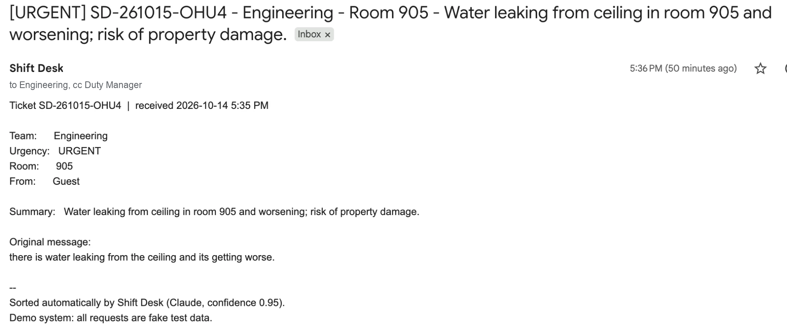
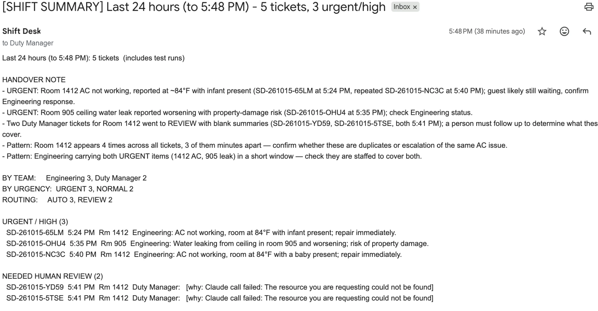

Shift Desk
AI dispatcher for hotel guest requests
Kept all 13 emergencies urgent on 60 requests it had never seen
The problem
Overnight guest and staff requests arrive by phone, text and walk-up. Someone writes them on a notepad and decides which department handles each one, and the decision depends on one person knowing who does what. Things get missed at shift change.
What I built
- An n8n workflow where Claude sorts every request: team, urgency, room, a one-line summary and language, in a fixed format.
- The workflow checks Claude's answer instead of trusting it. Anything unclear, low-confidence or manipulative goes to the Duty Manager for review.
- The right team gets an email; urgent tickets also copy the Duty Manager. Every ticket is logged to Google Sheets.
- Alerts when anything breaks, including quiet failures that don't crash the workflow.
- A 3 pm and 11 pm shift handover: exact counts from code, plus a short note written by Claude.



How I know it works
- 40-request test set: urgency accuracy went from 80% to 100% after fixing two causes, each documented before re-running.
- Held-out test: 60 new requests with the answer key frozen first. 100% right team, 95% right urgency, 90% right routing.
- All 13 true emergencies kept URGENT; all 5 spam, empty and manipulation attempts sent to a person.
- Compared three Claude models: Haiku matched it at about 1/50th of the cost but under-rated one safety issue every run.
- Nine findings written up, including a duplicate-ticket bug fixed with an idempotent write and a false alarm in the alert check.
Results
- Under 1¢ per request (about $0.01), median 2.4 seconds.
- Estimate: at 40 requests a night, about 80 minutes of reading and forwarding a night handled automatically.
What I'd do next
- Take requests by text (Twilio) or email instead of a web form.
- Track ticket status (open, done) and remind teams about open tickets.
Tools: n8n · Claude API · Google Sheets · Gmail